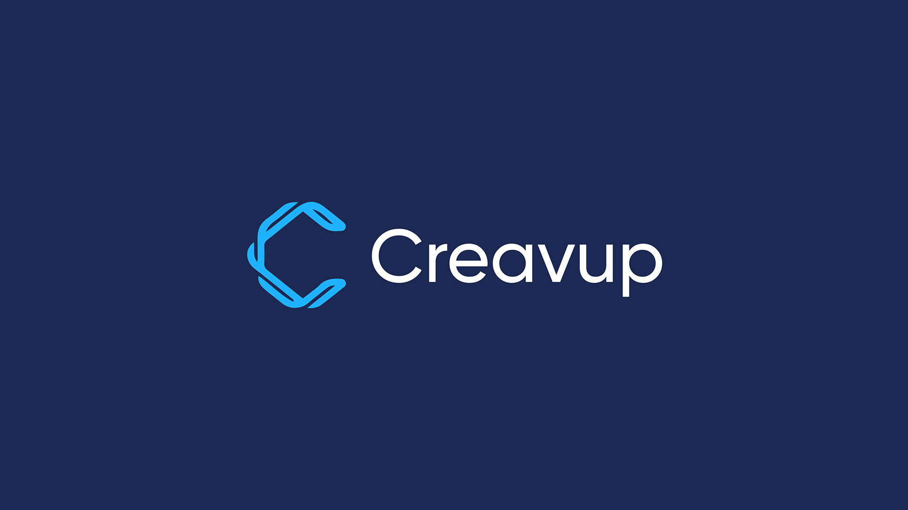
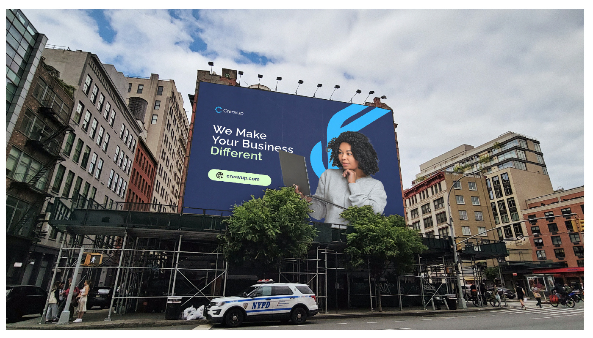
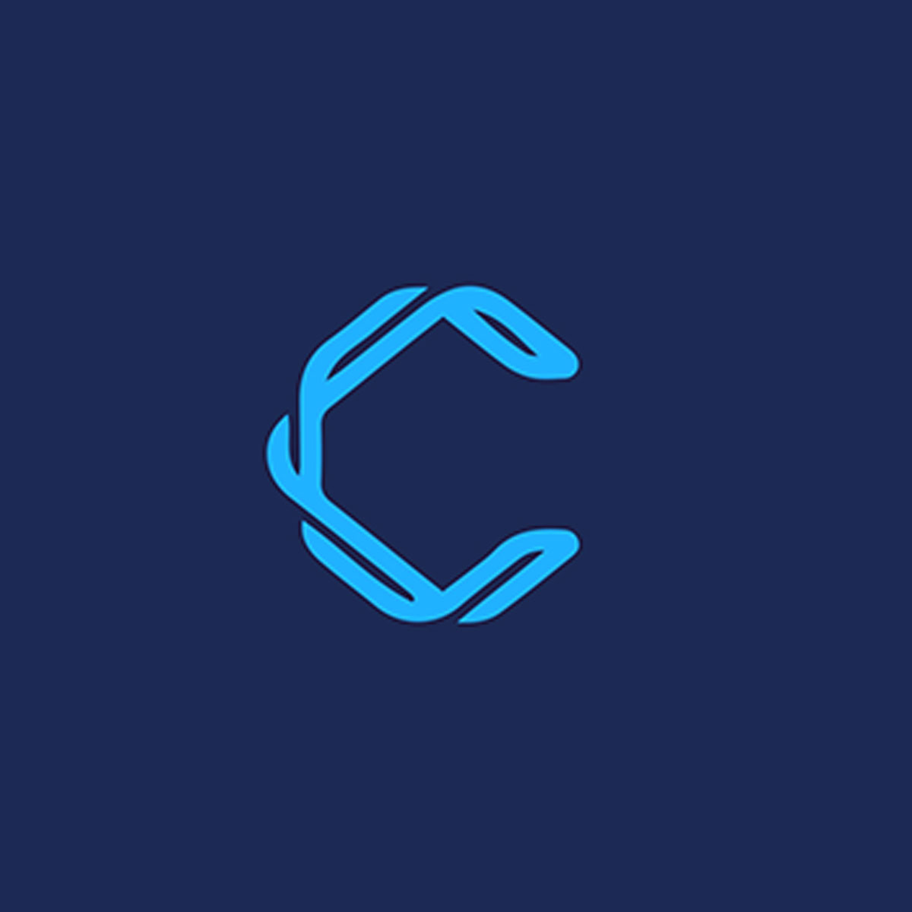
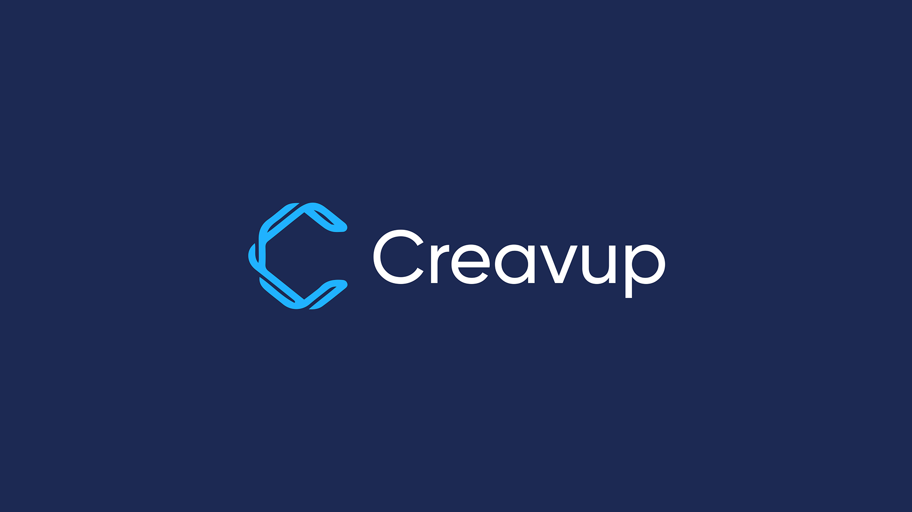
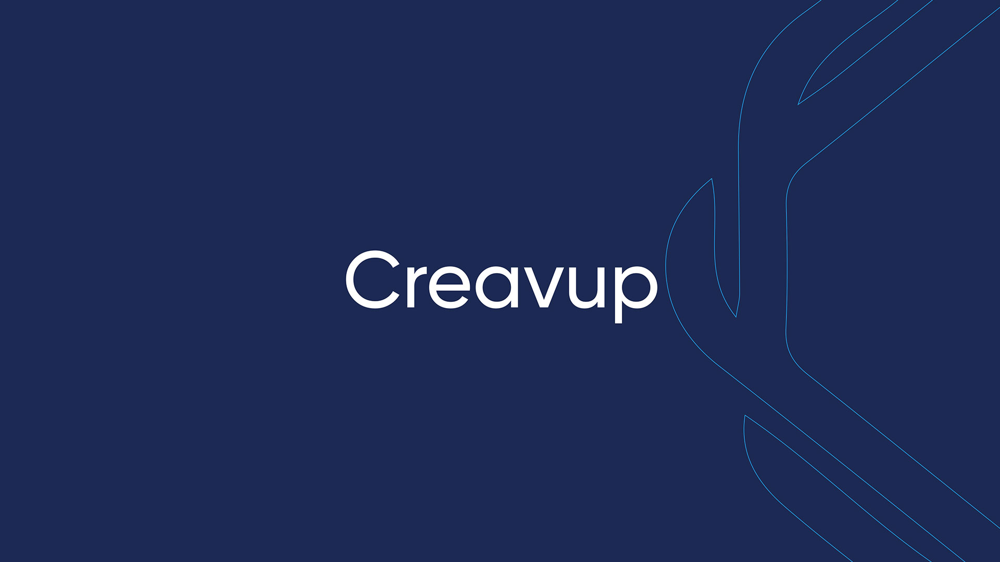
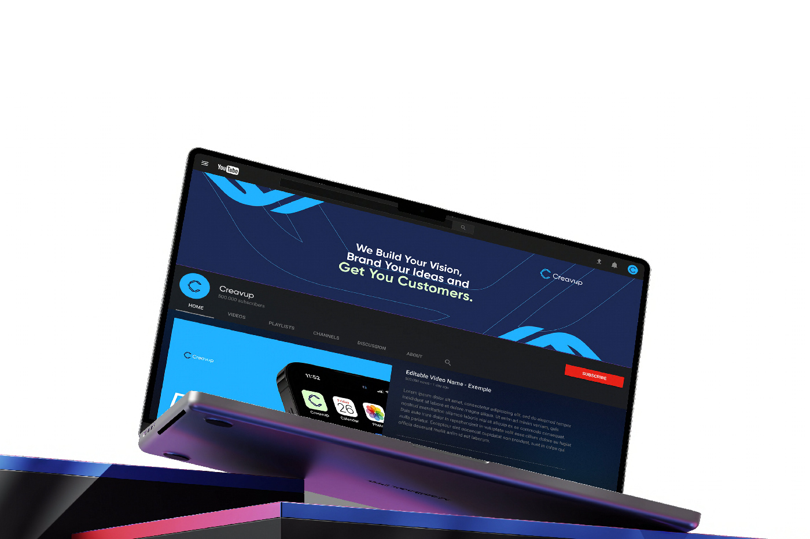
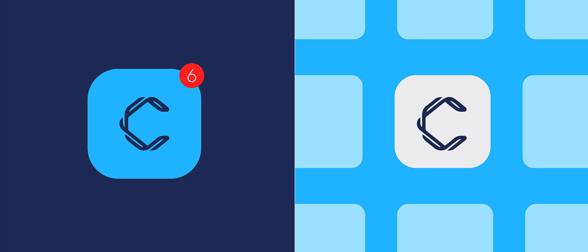
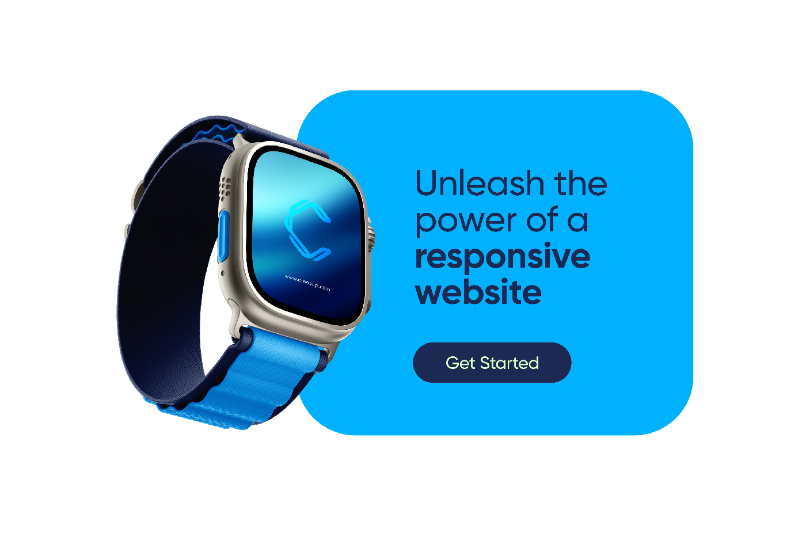

Open C Mark
The symbol is designed to feel active, modular, and useful across digital surfaces.
A clean creative-business identity reveal built around an abstract C mark, electric cyan energy, and a calm navy foundation that keeps the system premium.

The C icon feels open, technical, and energetic, while the wordmark gives the system enough calm to work across corporate and creative touchpoints.

The symbol is designed to feel active, modular, and useful across digital surfaces.
The typography balances the energy of the icon with clarity and professional restraint.
Cyan becomes the brand's signal color, adding speed, freshness, and visibility.
The reveal shows the icon, lockup, brand boards, and digital scenes working as one premium identity system.





